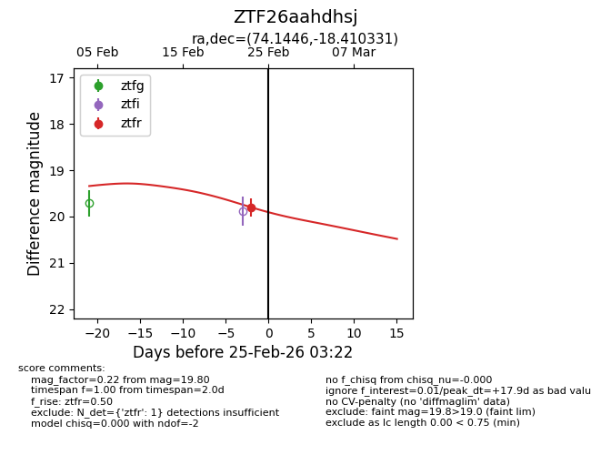
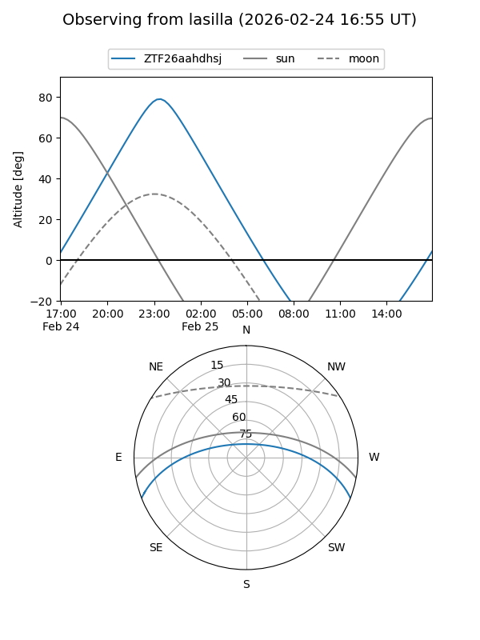
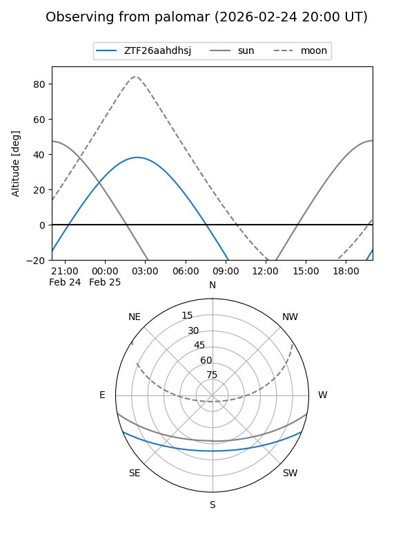
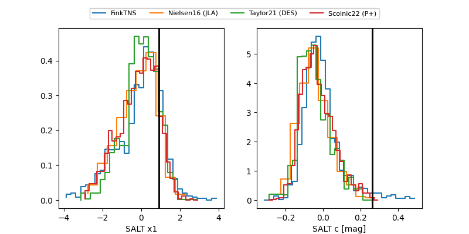

ZTF26aahdhsj
Target ZTF26aahdhsj at 2026-02-25 03:23
Aliases and brokers:
FINK: link
Lasair: link
ALeRCE: link
alt names
ZTF26aahdhsj (ztf,fink_ztf)
Coordinates:
equatorial (ra, dec) = 74.1446,-18.41033
equatorial (HMS+DMS) = 04:56:34.70,-18:24:37.19
galactic (l, b) = (217.9598,-33.34781)
Flags:
Photometry:
last ztfr=19.80
1 ztfr detections
Lightcurve

Visibility


Additional plots
